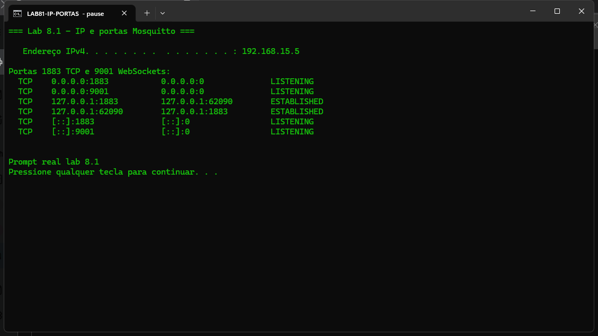
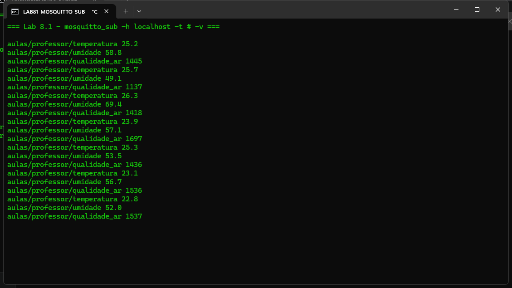
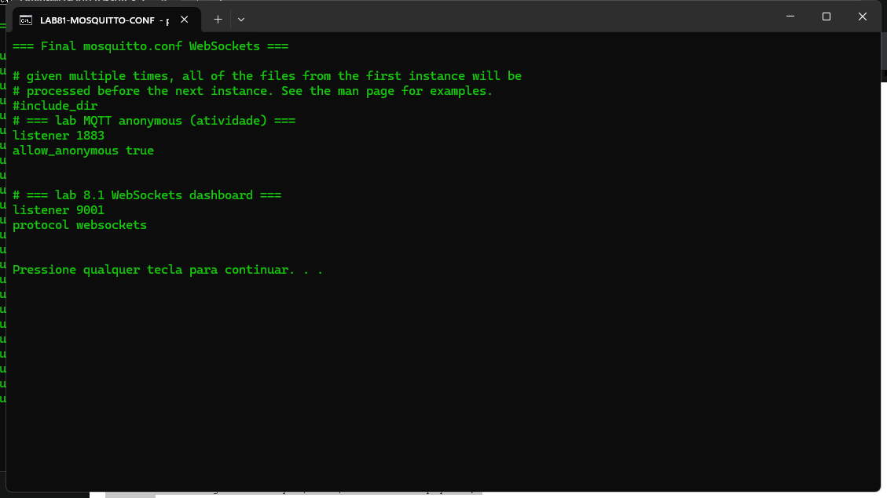
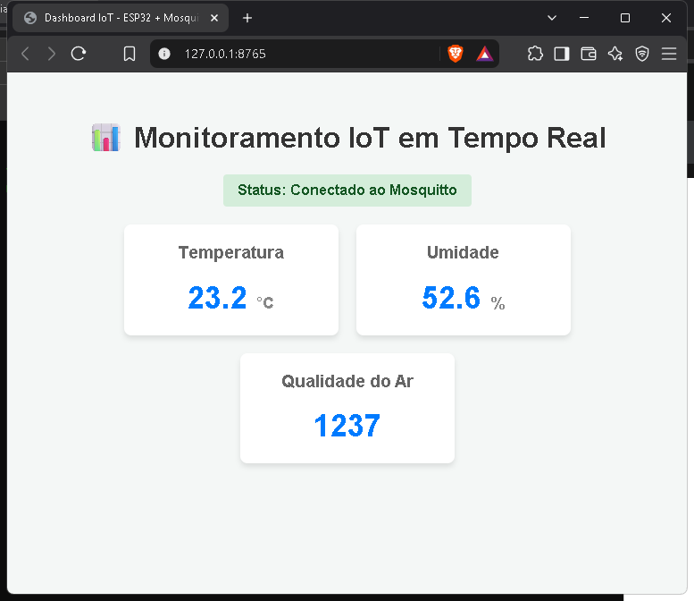

Aluno: Thales T | Data: 28/09/2026 | Broker: Mosquitto 2.1.2 local
RESULTADO: PASS — WebSockets :9001 + dashboard HTML/JS (Paho) conectado e cards atualizando em tempo real
Habilitar WebSockets no Mosquitto (porta 9001), criar dashboard HTML/JS com Paho MQTT e visualizar temperatura, umidade e qualidade do ar em tempo real.
listener 1883 allow_anonymous true listener 9001 protocol websockets
Serviço reiniciado; firewall inbound TCP 9001 criado (Mosquitto MQTT WebSockets 9001). IP do notebook: 192.168.15.5.
aulas/professor/temperaturaaulas/professor/umidadeaulas/professor/qualidade_arArquivo dashboard_mqtt/index.html com MQTT_HOST = "192.168.15.5" e MQTT_PORT = 9001.
IP e portas 1883/9001

mosquitto_sub #

Trecho do mosquitto.conf

Dashboard no navegador (Conectado)

esp32_simulado_mosquitto_local.py. Broker, WebSockets, Prompt e dashboard são reais.